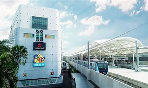
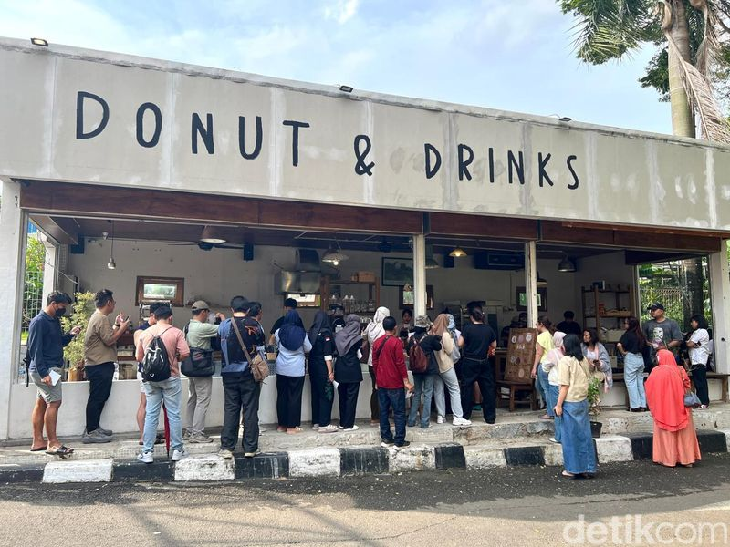
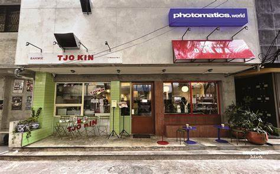
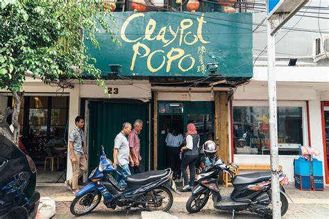

 Blok M kini sedang ramai di jagat media sosial. Telah lama kawasan di Jakarta Selatan ini menjadi favorit untuk menghabiskan liburan akhir pekan. Namun dengan banyaknya tempat makan baru, membuat kawasan Blok M Jakarta semakin ramai dikunjungi untuk berwisata kuliner yang lagi hits dan viral hingga membuat banyak orang rela antre.
Ada banyak pilihan kuliner baru yang menarik untuk dicicipi ketika mengunjungi Blok M. Mulai dari bakery, toko donat, kedai es krim, hingga kedai bakmi begitu menarik perhatian berbagai generasi saat ini. Kualitas rasa yang oke, pilihan menu yang unik, dan konsep tempat yang instagramable menjadi nilai plus. Tertarik untuk mengunjungi Blok M? Berikut rekomendasinya!
|  | OO Donut |
|  | Bakmie Tjo Kin |
|  | Claypot Popo |
|
Busy Cheese Cafe |
|
Haka Dimsum |
| No. | Nama Toko | Alamat | |
| 1. | OO Donut | Jl. Sultan Hasanuddin Dalam No.Dalam 3, Melawai, Kebayoran Baru, Jakarta Selatan | https://www.instagram.com/oo__donut/s |
| 2. | Bakmie Tjo Kin | Jl Melawai 5 No. 3, Melawai, Kebayoran Baru, Jakarta Selatan | https://www.instagram.com/bakmietjokin/ |
| 3. | Claypot Popo | Jl. Melawai 9 No.38, Melawai, Kec. Kby. Baru, Jakarta, Daerah Khusus Ibukota Jakarta 12160 | - |
| 4. | Busy Cheese Cafe | Jl. Melawai 3 3-30, Blok M, Melawai, Kebayoran Baru, Jakarta Selatan | https://www.instagram.com/busycheesecafe/ |
| 5. | Haka Dimsum | Jl. Sultan Hasanuddin Dalam No.3, RT.3/RW.1, Melawai, Kec. Kby. Baru, Kota Jakarta Selatan | https://www.instagram.com/hakadimsum |